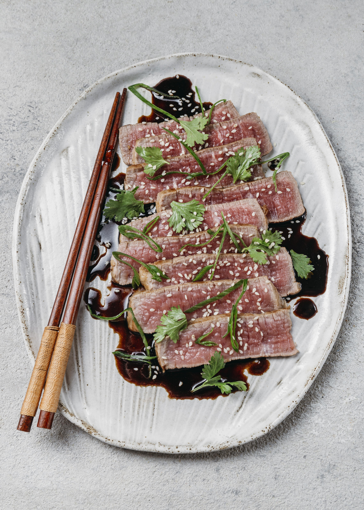

Char Siu Recipe
Home

Description
Char siu pork is an irresistibly delicious Chinese barbecue pork with a rich,
salty-sweet flavor. A delicious blend of soy, honey, rice wine, brown sugar,
and spices coats every bite of succulent pork tenderloin. Learn how to make
this flavorful favorite right here — plus, get tips on the best way to serve, store, and freeze char siu.
Ingredients
Marinade:
- ½ cup soy sauce
- ⅓ cup honey
- ⅓ cup ketchup
- ⅓ cup brown sugar
- ¼ cup Chinese rice wine
- 2 tablespoons hoisin sauce
- 2 tablespoons red bean curd (Optional)
- 1 teaspoon Chinese five-spice powder (Optional)
Pork:
- 2 (1 pound) pork tenderloins
Steps
- Gather all ingredients.
- Stir soy sauce, honey, ketchup, brown sugar, rice wine, hoisin sauce, red bean curd,
and five-spice powder together in a saucepan over medium-low heat. Cook and stir until just
combined and slightly warm, 2 to 3 minutes.
- Pour marinade into the bag with the pork. Squeeze air from the bag, seal, and turn the bag
a few times until pork is well coated. Marinate in the refrigerator, 2 hours to overnight.
- When ready to cook, preheat a charcoal grill for medium-high heat and lightly oil the grate.
- Remove pork from marinade and shake to remove excess liquid. Set aside the remaining marinade for basting.
- Rake the hot coals into two equal piles on opposite sides of the charcoal grate. Add a small container of
water to the grate. Place pork strips in the center of the grate for indirect cooking.
- Cook pork over indirect heat, turning regularly and basting as desired, until an instant-read thermometer
inserted into the center reads at least 145 degrees F (63 degrees C), 30 minutes or longer.
- Serve hot and enjoy!